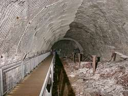

| In English |
| In English |
Mittelbau Dora - Mittelwerk Dora
Touristische Informationen:
 |
| Bild: der neue Zugangsstollen zur unterirdischen Fabrik. |
| Ort: | A7 Ausf Hann. Münden/Werratal, F80 Richtung E 85km bis Nordhausen oder A7 Ausf Seesen(Harz), B243 66km bis Nordhausen. In Nordhausen F4 nach N Richtung Blankenburg, kurz vor dem Ortsende links ab, Beschilderung zur Mahn- und Gedenkstätte Mittelbau Dora folgen. (30,Le39) |
| Öffnungszeiten: | OKT-MAR täglich 10-16, APR-SEP täglich 10-18. Führungen: Di-Fr 11+14, Sa, So, Fei 11, 13, 15. |
| Eintrittspreise: | frei |
| Typ: | Stollen in Anhydrit |
| Licht: | elektrisch |
| Dimension: | Fl=120.000m², L=20,000m, H=30m. |
| Führungen: | L=710m, D=120min. |
| Fotografieren: | |
| Zugänglichkeit: | |
| Literatur: |
M. Bornemann (1994):
Geheimprojekt Mittelbau,
Bernhardt & Gräfe Verlag, Bonn R. Eisfeld (2000): Mondsüchtig: Wernher von Braun und die Geburt der Raumfahrt aus dem Geist der Barbarei, Rowohlt, Reinbek |
| Adresse: |
KZ-Gedenkstätte Mittelbau-Dora, Kohnsteinweg 20, 99734 Nordhausen, Tel: 03631-4958-0, Anmeldung 03631-4958-20,
Fax: 03631-4958-13,
E-mail: |
| Nach unserem Wissen sind die Angaben für das in eckigen Klammern angegebene Jahr korrekt. Allerdings können sich Öffnungszeiten und Preise schnell ändern, ohne daß wir benachrichtigt werden. Bitte prüfen Sie bei Bedarf die aktuellen Werte beim Betreiber, zum Beispiel auf der offiziellen Website in der Linkliste. |
|
Geschichte
 |
| Bild: der ursprüngliche Eingang B von innen. Er wurde von der Russischen Armee nach dem Krieg gesprengt. Im Vordergrund die Überreste eines V2 Raketenantriebs. |
| 1943 | alliierter Angriff auf Peenemünde. Verlagerung der V-Waffenproduktionsstätte Peenemünder Waffenwerk in den Kohnstein. | |
| 28-AUG-1943 | Beginn des Baus der Stollen mit den ersten 107 Gefangenen. | |
| DEC-1943 | erste drei Raketen fertiggestellt. | |
| AUG-1944 | V1-Produktion im Kohnstein läuft an. | |
| 11-APR-1945 | Befreiung, erstmals amerikanische Soldaten in den Stollen. | |
| JUN-1945 | 100 komplette "A4"-Raketen, wertvolle Dokumente sowie Raketenteile werden von den Amerikanern geborgen und abtransportiert. | |
| 1948 | Eingangsstollen von russischen Soldaten gesprengt. | |
| 06-APR-1966 | Eröffnung einer Ausstellung im ehemaligen Krematorium. | |
| APR-1973 | neugestaltete Ausstellung mit vier Räumen. | |
| 1990/91 | erste Erforschung der unterirdischen Anlagen. | |
| 11-APR-1995 | 50ster Jahrestag der Befreiung, Eröffnung neuer Einrichtungen. |
Bemerkungen
|  |
| Bild: ein Querstollen. |
Mittelbau-Dora ist eine KZ-Gedenkstätte, die noch von der (erklärtermaßen antifaschistischen) DDR-Regierung eingerichtet wurde. Hier befand sich während der Zeit des Dritten Reichs ein großes Arbeitslager, das aber eine ganz besondere historische Dimension hatte. Hier wurde die Superwaffe V2 gebaut. Nach Luftangriffen auf das Forschungszentrum in Peenemünde waren hier die deutschen Wissenschaftler stationiert, die mit der Entwicklung und Produktion von Raketen beschäftigt waren. Der bekannteste von ihnen war wohl Wernher von Braun.
Neben dem Lager, im Kohnstein, befand sich die größte unterirdische Waffenproduktionsstätte der Nationalsozialisten mit einer Fläche von 120.000m². Der Kohnstein ist ein Bergrücken der bis zu 300m N.N. erreicht. Sein Gipsgestein wird an der Nordseite an vielen Stellen abgebaut. Gründe für die Wahl dieses Orts waren die leichte Zugänglichkeit, zentrale Lage in Deutschland und natürlich die leichte Bearbeitbarkeit des Anhydrits. Anhydrit ist ein sehr weiches Gestein und kann deshalb sehr einfach ausgehöhlt werden.
In den unterirdischen Fabrikanlagen der Mittelwerk GmbH wurden die Flügelbombe V1, die Fernrakete V2, und verschiedene Flugzeigteile gebaut. Die Tunnel hatten damals eine Gesamtlänge von 20km und eine Höhe von bis zu 30 Metern. Zeitweilig waren die Häftlinge sogar hier untergebracht. Insgesamt verloren in den anderthalb Jahren ca. 20.000 Menschen, ein Drittel der hier Inhaftierten, ihr Leben.
Die unterirdischen Fabrikanlagen waren während DDR Zeiten nicht beachtet worden, wurden aber nach der Wende erforscht und schließlich erschlossen. Ein bischen war dafür wohl auch die Suche nach dem Bernsteinzimmer, bzw. die Hoffnung es hier zu finden verbunden. Ein Anhydrit Tagebau an der Nordseite erreichte 1990 den Bereich der unterirdischen Anlagen und zerstörte einige Teile durch Abbau. Inzwischen ist die gesamte Anlage jedoch unter Schutz gestellt. Etwas makaber ist die Tatsache, dass sie nicht unter Denkmalschutz gestellt werden konnte, dass sie aber durch den Tod von Insassen als Begräbnisstätte gilt und allein dadurch vor dem Abbau geschützt ist. Die aktuelle Regelung sieht vor, dass der Anhydrit bis 40m an die Anlage heran abgebaut werden darf, und zwar von allen Seiten. So wird in wenigen Jahren vom Kohnstein nur noch eine Art Brikett mit den Tunneln darin übrig bleiben.
Ein sehr kleiner Teil der Tunnel ist während einer Führung durch die Gedenkstätte zu besichtigen. Dazu mußte ein 180m langer Zugangstunnel neu aufgefahren werden, da die Zugänge 1948 von russischen Soldaten gesprengt worden waren. Ein Besuchersteg erlaubt dann die Besichtigung von etwa 350m Tunnel.
 |
| Mittelbau Dora Gallerie |
- Siehe auch
 Salzaspring
Salzaspring Suche auf Google nach "Mittelbau Dora"
Suche auf Google nach "Mittelbau Dora" Google Earth Placemark
Google Earth Placemark KZ-Gedenkstätte Mittelbau-Dora (offizielle Homepage)
KZ-Gedenkstätte Mittelbau-Dora (offizielle Homepage)- KZ-Lager Mittelbau-Dora
- Dora: The Dark Side of Genius
(
 )
) - Mittelbau / Dora Today - After 50+ Years
Viele Bilder.
()
- Mittelbau-Dora Concentration Camp
()
- The Mittelwerk/Dora tunnel complex
()
- Mittelbau Dora
von Richard Murphy.
()
- Mittelbau Dora
()
- Mittelwerk "Dora"